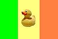
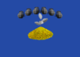
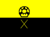

De: La Frikipedia, la enciclopedia extremadamente seria.
De: La Frikipedia, la enciclopedia extremadamente seria. De: La Frikipedia, la enciclopedia extremadamente seria.
La siguiente galería es una recopilación de las banderas hechas por algunos usuarios con paint en un estado de alucinaciones causadas por ingerir dulcecitos en mal estado de algunos estados soberanos. En esta lista solo se coloca la bandera friki y solo una bandera por país
| Índice: | (S.O.S) - A B C D E F G H I J K L M N O P R S T U V Y Z |
|---|
| Bandera de Afganistán | [[Imagen:Afganistan.png]] | |
| Bandera de Akistán | [[Imagen:Akistanbandera.JPG]] | |
| Bandera de Al-Ándalus | [[Imagen:Bandera pirata sable.png]] | |
| Bandera de Albania | [[Imagen:Bandera de Albania.png]] | |
| Bandera de Alemania | 
|
[[Imagen:Bandera de Alemania.png]] |
| Bandera de Alemania Nazi | [[Imagen:Banderanazi.png]] | |
| Bandera de Alemania Oriental | [[Imagen:Bandera de Alemania Oriental.png]] | |
| Bandera de Andorra | [[Imagen:Bandera de andorra.png]] | |
| Bandera de la Antártida | [[Imagen:At.png]] | |
| Bandera de Arabia Saudita | [[Imagen:Bandera de Arabia Saudita.png]] | |
| Bandera de Argelia | [[Imagen:Argelia.png]] | |
| Bandera de Argentina | 
|
[[Imagen:Bandera de Argentina.png]] |
| Bandera de Armenia | [[Imagen:Bandera Armenia.png]] | |
| Bandera de Aruba | [[Imagen:22222.jpg]] | |
| Bandera de Australia | [[Imagen:Australia-flag-simpsons.gif]] | |
| Bandera de Austria | [[Image:AustriaBandera.png]] | |
| Bandera de Azerbaiyán | [[Imagen:Azer-bandera.png]] |
| Índice: | (S.O.S) - A B C D E F G H I J K L M N O P R S T U V Y Z |
|---|
| Bandera de Bahamas | [[Imagen:Bandera Bahamas.png]] | |
| Bandera de Bangladesh | [[Imagen:Bandera de Bangladesh.png]] | |
| Bandera de Barbados | [[Imagen:Barbados.png]] | |
| Bandera de Bélgica | [[Imagen:Belgflag.jpg]] | |
| Bandera de Bielorrusia | [[Imagen:Bandera De Bielorrusia.png]] | |
| Bandera de Bosnia-Herzegovina | [[Imagen:Bosnia_Flag.png]] | |
| Bandera de Brasil | [[Imagen:Bandera_de_Brasil.png]] | |
| Bandera de Bután | [[Imagen:Bandera de Butan.png]] |
| Índice: | (S.O.S) - A B C D E F G H I J K L M N O P R S T U V Y Z |
|---|
| Bandera de Camboya | [[Imagen:Bandera de Camboya.png]] | |
| Bandera de Camerún | [[Imagen:Camerun.png]] | |
| Bandera de Canadá | [[Imagen:Bandera de Canada.png]] | |
| Bandera de Canilandia | [[Imagen:Banderacani.jpg]] | |
| Bandera de Cataluña | [[Imagen:Bandera Cata.jpg]] | |
| Bandera de Chad | [[Imagen:Bandera de Chad.png]] | |
| Bandera de Chicken Island |  | [[Imagen:Duck flag.jpg]] |
| Bandera de Chilango | [[Imagen:Chilangolandia.jpg]] | |
| Bandera de Chile | [[Imagen:Bandera de Chile.png]] | |
| Bandera de China | [[Imagen:Bandera China.jpg]] | |
| Bandera de Chiquitistán | [[Imagen:Banderachiquitistan.png]] | |
| Bandera de Colombia | [[Imagen:Colombiaflag.gif]] | |
| Bandera de Comoras | [[Imagen:Comoras.png]] | |
| Bandera de Corea del Norte | [[Imagen:Bandera de corea.png]] | |
| Bandera de Corea del Sur | [[Imagen:Bandera de Corea del Sur.png]] | |
| Bandera de Costa Rica | 
|
[[Imagen:Banderafutbolcostarica.jpg]] |
| Bandera de Costa de Marfil | [[Imagen:Bandera de Costa de Marfil.png]] | |
| Bandera de Croacia | [[Imagen:Bandera de Croacia.png]] | |
| Bandera de Cuba | [[Imagen:Bandera Cuba.png]] |
| Índice: | (S.O.S) - A B C D E F G H I J K L M N O P R S T U V Y Z |
|---|
| Bandera de Daltonia | [[Imagen:Badera daltonia.jpg]] | |
| Bandera de Dinamarca | [[Imagen:Bandera de Dinamarca.png]] |
| Índice: | (S.O.S) - A B C D E F G H I J K L M N O P R S T U V Y Z |
|---|
| Bandera del Ecuador | [[Imagen:Bandera del Ecuador.jpg]] | |
| Bandera de Egipto | [[Imagen:Bandera De Egipto.png]] | |
| Bandera de El Salvador | [[Imagen:Bandera de El Salvador.png]] | |
| Bandera de Eritrea | [[Imagen:Eritrea Flag.png]] | |
| Bandera de Escocia | [[Imagen:Bandera Escocia copia.png]] | |
| Bandera de Eslovaquia | [[Imagen:Slovakia_Flag.png]] | |
| Bandera de Eslovenia | [[Imagen:Bandera de Eslovenia.png]] | |
| Bandera de España | [[Imagen:Flag of Spain.png]] | |
| Bandera de Espiña | [[Imagen:Espiña.gif]] | |
| Bandera de Esteiro | [[bandeiraesteiro.jpg]] | |
| Bandera de Estonia | [[Imagen:Bandera de Estonia.png]] | |
| Bandera de los Estados Confederados de América | [[Imagen:Estados Confederados de America.png]] | |
| Bandera de los Estados Unidos de América | [[Imagen:Estados comerciales de america.gif]] | |
| Bandera de Etiopía | [[Imagen:Bandera de Etiopia.png]] |
| Índice: | (S.O.S) - A B C D E F G H I J K L M N O P R S T U V Y Z |
|---|
| Bandera de Filipinas | [[Imagen:Bandera filipinas.GIF]] | |
| Bandera de Finlandia | [[Imagen:Bandera de Finlandia.png]] | |
| Bandera de Francia | [[Imagen:Bandera de Francia.png]] | |
| Bandera de Friolandia | [[Imagen:Bandera friolandia 2.png]] | |
| Bandera de Fumatown | [[Imagen:Bandera Fumatown.jpg]] | |
| Bandera de Furbolandia | [[Imagen:Bandera futbol.png]] |
| Índice: | (S.O.S) - A B C D E F G H I J K L M N O P R S T U V Y Z |
|---|
| Bandera de Georgia | [[Imagen:Georgia.png]] | |
| Bandera de Ghana | [[Imagen:Bandera de Ghana.png]] | |
| Bandera de Gibraltar | [[Imagen:Bandera de gibraltar.png]] | |
| Bandera de Grecia | [[Imagen:Bandera De Grecia.png]] | |
| Bandera de Groenlandia | [[Imagen:Bandera de Groenlandia.png]] | |
| Bandera de Guatemala | [[Imagen:Bandera de Guatemala.png]] | |
| Bandera de Guirilandia | [[Imagen:Guirilandia.jpg]] |
| Índice: | (S.O.S) - A B C D E F G H I J K L M N O P R S T U V Y Z |
|---|
| Bandera de Haití | [[Imagen:Bandera de Haiti.png]] | |
| Bandera de Holanda | [[Imagen:Bandera de Holanda.png]] | |
| Bandera de Hong Kong | [[Imagen:Hong Kong.png]] | |
| Bandera de Hungría | [[Imagen:Bandera Hungara.png]] |
| Índice: | (S.O.S) - A B C D E F G H I J K L M N O P R S T U V Y Z |
|---|
| Bandera del III Imperio Mexicano | [[Imagen:BanderaMexico.png]] | |
| Bandera del Imperio Alemán | [[Imagen:Bandera Imperio Aleman.png]] | |
| Bandera del Imperio Español | [[Imagen:Bandera Imperio Espanol.jpg]] | |
| Bandera del Imperio Friki | [[Imagen:Banderatiera.png]] | |
| Bandera del Imperio Huno | [[Imagen:Bandera Huna copia.jpg]] | |
| Bandera del Imperio Motrileño del Sur | [[Imagen:Banderamotril.png]] | |
| Bandera del Imperio Otomano | 
|
[[Imagen:Bandera Imperio Otomano.png]] |
| Bandera del Imperio Portugués | [[Imagen:Bandera Imperio Portugal.jpg]] | |
| Bandera del Imperio Romano | [[Imagen:Banderaromana.jpg]] | |
| Bandera de la India | [[Imagen:Bandera de India.png]] | |
| Bandera de Indonesia | [[Imagen:IndonesiaBandera.png]] | |
| Bandera de Inglaterra | [[Imagen:Inglaterra.png]] | |
| Bandera de Irán | [[Imagen:Bandera de iran.png]] | |
| Bandera de Iraq | [[Imagen:Bandera irak.gif]] | |
| Bandera de Irlanda | 
|
[[Imagen:Irlanda Flag 30px.gif]] |
| Bandera de Irlanda del Norte | [[Bandera De Irlanda del Norte.png]] | |
| Bandera de Islandia | [[Imagen:Bandera de Islandia.jpg]] | |
| Bandera de las Islas Cook | [[Bandera de Islas Cook.png]] | |
| Bandera de Israel | [[Imagen:Bandera_de_Israel.png]] | |
| Bandera de Italia | [[Imagen:Italia.JPG]] |
| Índice: | (S.O.S) - A B C D E F G H I J K L M N O P R S T U V Y Z |
|---|
| Bandera de Jamaica | [[Imagen:Bandera_de_Jamaica.png]] | |
| Bandera de Japón | [[Imagen:Bandera de Japon.png]] |
| Índice: | (S.O.S) - A B C D E F G H I J K L M N O P R S T U V Y Z |
|---|
| Bandera de Kazajstan | [[Imagen:Bandera de Kazajstan.png]] | |
| Bandera de Kirguistan | [[Imagen:Bandera De Kirguistan.png]] | |
| Bandera de Kosovo |  | [[Imagen:Kosovo.png]] |
| Índice: | (S.O.S) - A B C D E F G H I J K L M N O P R S T U V Y Z |
|---|
| Bandera de Laos | [[Imagen:Laos flag.PNG]] | |
| Bandera de Líbano | [[Imagen:Bandera de Libano.png]] | |
| Bandera de Liechtenstein | [[Imagen:Bandera lietchestein.png]] |
| Índice: | (S.O.S) - A B C D E F G H I J K L M N O P R S T U V Y Z |
|---|
| Bandera de Macedonia | [[Imagen:Flag of Macedonia.png]] | |
| Bandera de Maguncia | 
|
[[Imagen:Carta-ajuste.jpg]] |
| Bandera de Malasia | [[Imagen:Bandera de Malasia.png]] | |
| Bandera de Malta | [[Imagen:Bandera de Malta.png]] | |
| Bandera de Marruecos | [[Imagen:Bandera de marruecos.png]] | |
| Bandera de Mauritania | 
|
[[Imagen:720px-Flag of Mauritania svg2.PNG]] |
| Bandera de México | [[Imagen:Bandera de Mexico.png]] | |
| Bandera de Mónaco | [[Imagen:Monaco Flag.png]] | |
| Bandera de Mongolia | [[Imagen:Bandera de Mongolia.png]] |
| Índice: | (S.O.S) - A B C D E F G H I J K L M N O P R S T U V Y Z |
|---|
| Bandera de Nauru | [[Imagen:Bandera De Nauru.png]] | |
| Bandera de Neo América | [[Imagen:BanderaNeoAmerica.jpg]] | |
| Bandera de Nepal | [[Imagen:Bandera de Nepal.png]] | |
| Bandera de Nicaragua | [[Imagen:Nicaragua.png]] | |
| Bandera de Nigeria | [[Imagen:Nigeria Flag.png]] | |
| Bandera de Noruega | [[Imagen:Bandera Noruega.PNG]] | |
| Bandera de Nueva Zelanda | [[Imagen:Bandera de Nueva Zelanda.png]] |
| Índice: | (S.O.S) - A B C D E F G H I J K L M N O P R S T U V Y Z |
|---|
| Índice: | (S.O.S) - A B C D E F G H I J K L M N O P R S T U V Y Z |
|---|
| Bandera del País de Nunca Jamás | [[Imagen:Bandera de nunca jamas.jpg]] | |
| Bandera de Pakistán | [[Imagen:Bandera de Pakistan.png]] | |
| Bandera de Palau | [[Imagen:Palau.png]] | |
| Bandera del País Vasco | 
|
[[Imagen:Bandera del Pais Vasco - Euskadi.png]] |
| Bandera de Panamá | [[Imagen:Panama Flag.png]] | |
| Bandera de Papua Nueva Guinea | [[Imagen:Bandera de Papua Nueva Guinea.png]] | |
| Bandera de Paraguay | [[Imagen:Bandera de Paraguay.png]] | |
| Bandera de Perú | [[Imagen:Bandera de Peru.png]] | |
| Bandera de Petoria | [[Imagen:Flag of Petoria.gif]] | |
| Bandera de Polonia | [[Imagen:Polonia.gif]] | |
| Bandera de Portugal | [[Imagen:Bandera de Portugal.png]] | |
| Bandera de Puerto Rico | [[Imagen:Bandera de Puerto rico.png]] | |
| Bandera de Pyrule | [[Imagen:Triforce.png]] |
| Índice: | (S.O.S) - A B C D E F G H I J K L M N O P R S T U V Y Z |
|---|
| Índice: | (S.O.S) - A B C D E F G H I J K L M N O P R S T U V Y Z |
|---|
| Bandera del Reino Champiñón |  | [[Imagen:Flag.jpg]] |
| Bandera del Reino de Aragón | [[Imagen:Bandera Reino de Aragon.png]] | |
| Bandera del Reino de Grecia | [[Imagen:Bandera Reino de Grecia.png]] | |
| Bandera del Reino de Italia | [[Imagen:Bandera Reino de Italia.png]] | |
| Bandera del Reino Unido | [[Imagen:Bandera británica.png]] | |
| Bandera de la República Checa | [[Imagen:Bandera de la Republica Checa.png]] | |
| Bandera de la República del Papel | [[Imagen:RCP Flag.png]] | |
| Bandera de República Dominicana | [[Imagen:Imagen-BanderaRD.jpg]] | |
| Bandera de Rusia | [[Imagen:Rusia.png]] |
| Índice: | (S.O.S) - A B C D E F G H I J K L M N O P R S T U V Y Z |
|---|
| Bandera de Samoa | 
|
[[Imagen:Bandera de Samoa.png]] |
| Bandera de Samoa Americana | [[Imagen:Bandera de Samoa Americana.png]] | |
| Bandera de San Cristobal y ¿Nieves? | [[Imagen:Bandera de scyn.png]] | |
| Bandera de San Marino | [[Imagen:Sanflag.png]] | |
| Bandera de Serbia | [[Imagen:Bandera de Serbia.png]] | |
| Bandera de Singapur | [[Imagen:Sg.png]] | |
| Bandera de Siria | [[Imagen:Bandera Siria.PNG]] | |
| Bandera de Somalia | [[Imagen:Bandera de Somalia.png]] | |
| Bandera de Suecia | [[Imagen:Bandera de Suecia.png]] | |
| Bandera de Suiza | [[Imagen:Bandera de Suiza.png]] |
| Índice: | (S.O.S) - A B C D E F G H I J K L M N O P R S T U V Y Z |
|---|
| Bandera de Tailandia | [[Imagen:Bandera Tailandia.png]] | |
| Bandera de Taiwán | [[Imagen:Taiwan Flag.png]] | |
| Bandera de Tayikistán | [[Imagen:Bandera de Tayikistan.png]] | |
| Bandera del Tibet | [[Imagen:800px-Flag of Tibet svg2.PNG]] | |
| Bandera de Tonga | 
|
[[Imagen:Bandera de Tonga.png]] |
| Bandera de Turkmenistán | [[Imagen:Bandera de Turkmenistan.png]] | |
| Bandera de Turquía | [[Imagen:Turquia.png]] | |
| Bandera de Tuvalu | [[Imagen:Bandera de tuvalu.png]] |
| Índice: | (S.O.S) - A B C D E F G H I J K L M N O P R S T U V Y Z |
|---|
| Bandera de Ucrania | [[Imagen:Bandera de Ucrania.png]] | |
| Bandera de la Unión Soviética | [[Imagen:Bandera urss.png]] | |
| Bandera de Uruguay | [[Imagen:Bandera de Uruguay.png]] | |
| Bandera de Uzbekistán | [[Imagen:Bandera de uzbekistan.png]] |
| Índice: | (S.O.S) - A B C D E F G H I J K L M N O P R S T U V Y Z |
|---|
| Bandera de Vaticano | [[Imagen:Vatflag.jpg]] | |
| Bandera de Venezuela | [[Imagen:Bandera de Venezuela.png]] | |
| Bandera de Vietnam | [[Imagen:Banderavietnam.jpg]] |
| Índice: | (S.O.S) - A B C D E F G H I J K L M N O P R S T U V Y Z |
|---|
| Bandera de Wallis y Futuna | [[Imagen:Bandera de Wallis y Futuna.png]] |
| Índice: | (S.O.S) - A B C D E F G H I J K L M N O P R S T U V Y Z |
|---|
| Índice: | (S.O.S) - A B C D E F G H I J K L M N O P R S T U V Y Z |
|---|
| Índice: | (S.O.S) - A B C D E F G H I J K L M N O P R S T U V Y Z |
|---|
| Índice: | (S.O.S) - A B C D E F G H I J K L M N O P R S T U V Y Z |
|---|
Autor(es):